Transmission Line
在傳統電子學的角度，我們假設電子的傳遞速度非常快 (和光速同量級)，所有的電流、電壓變化都會立即反應，但當訊號的頻率越來越高，比如 28GHz 的訊號，週期只有極短的 35.71ps，若導線的長度長到一定的程度，電子的傳遞所花費的時間就無法被忽略。
舉例來說，若電子的傳遞速度為 0.3倍的光速 (即 0.3C)，當導線長度為 0.3212 公分時，訊號從導線的一端傳到另一端剛好需要一個 28GHz 的週期，意即當輸入端要打第二個週期訊號時，第一個週期訊號才剛好傳到導線的另一端，如 Fig. 1 所示，此處假設在輸出端沒有發生反射。
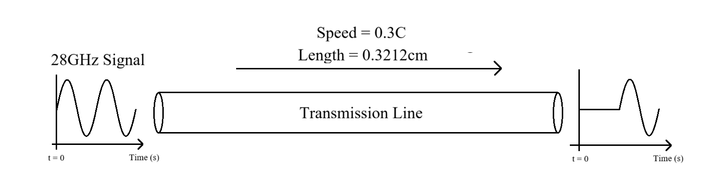
Characteristic Impedance
特徵阻抗的物理意義為:
當一個高頻訊號沿著傳輸線傳播時，訊號所看見的電壓波與電流波的比值，其公式為:
\(Z_0=\sqrt{\frac{R+j\omega L}{G+j\omega C}}\)
想像一條無限長的導線，當訊號走在導線上時，訊號每走一小段，就會對傳輸線上的單位電容充電，並在單位電感上產生電流，這兩種阻礙的合就是特徵阻抗， 當訊號頻率極高的時候，電阻和電導的損耗可以忽略不計，公式可以簡化為:。
\(Z_0=\sqrt{\frac{L}{C}}\)
觀察公式可以發現，傳輸線的特徵阻抗由其幾何結構和介電材質決定:
Reflection
現有一根繩子，繩子的一端繫於牆上，當我們手持另一端的繩頭甩出波型，此波在撞擊牆壁後會產生反射，反射波會傳回我們的手中，如 Fig. 2 所示。
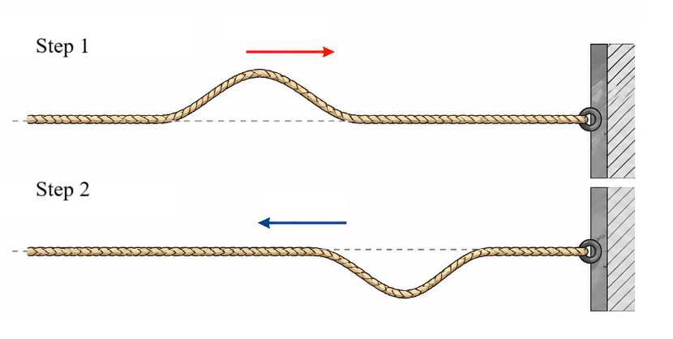
我們同樣可以預期，若當傳輸線的輸出端發生阻抗不匹配的時候，在輸出端同樣會發生反射，反射的訊號同樣會傳回輸入端， 若輸入為一個週期性訊號，則此反射波會與輸入訊號發生週期性干涉。
Varaious Impedance Matching Condition
我們已經了解到當阻抗不匹配的時候，在介面處會發生反射，接下來我們討論，當儀器的輸出阻抗為 50\(\Omega\)，看見不同特徵阻抗的傳輸線，以及不同負載下，於輸入端和負載端看見的響應為何。
Loading is Open
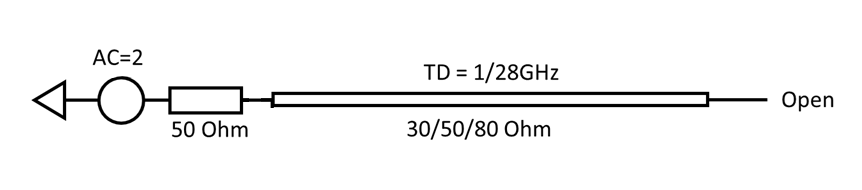
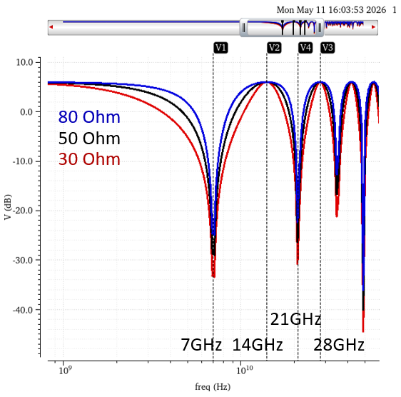
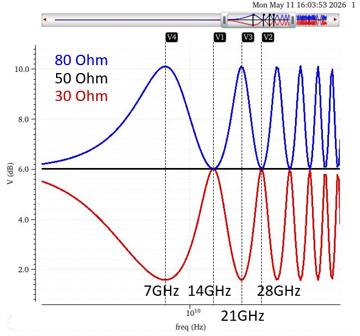
如 Fig. 3 所示，假設有一 AC Voltage Source，其輸出阻抗為 50\(\Omega\)，緊接著一條 Delay 為 1/28GHz 的傳輸線，負載端為開路。
此狀況的輸入端與輸出端響應如 Fig. 4、Fig. 5 所示，接下來討論此響應的原因。
我們先觀察傳輸線和負載端的阻抗不匹配，訊號由輸入端開始，走過 1/28GHz 的 Delay 後來到負載端，由於負載開路，反射係數為 1，即為相位不反轉的反射， 並且再走過 1/28GHz 的 Delay 回到輸入端，一共走了 1/14GHz。
對不同特徵阻抗的傳輸線來說，輸入端的情況都一樣，看到同相，Delay 1/14GHz 的訊號
輸出端的訊號會經過 1/28GHz 的 Delay 回到輸入端，若傳輸線和儀器的輸出阻抗 50\(\Omega\) 不匹配，會發生二次反射， 以傳輸線特徵阻抗 80\(\Omega\) 為例，輸入端二次反射的反射係數為 \(\frac{50-80}{50+80}\)，即為相位反轉的反射， 再經過 1/28GHz 的 Delay 回到輸出端，一共走了 1/14GHz，並且相位反轉。
同理，若傳輸線的特徵阻抗為 50\(\Omega\)，則因為不會有二次反射，在輸出端沒有 Notch 及 Peaking。
若傳輸線特徵阻抗為 30\(\Omega\)，則二次反射的反射係數為 \(\frac{50-30}{50+30}\)，即為相位不反轉的反射，故在 7GHz 處有 Notch，14GHz 處有 Peaking。
Loading is 30\(\Omega\)
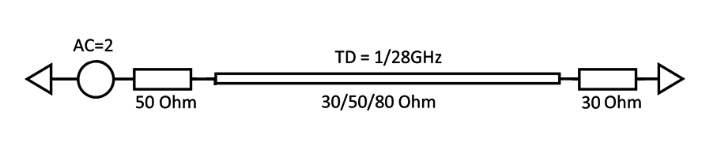
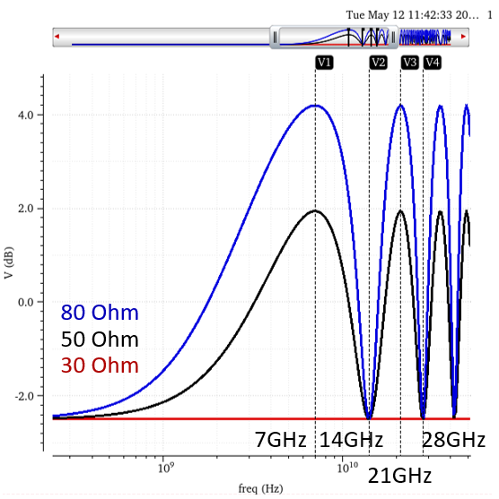
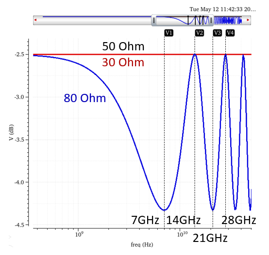
如 Fig. 6 所示，假設有一 AC Voltage Source，其輸出阻抗為 50\(\Omega\)，緊接著一條 Delay 為 1/28GHz 的傳輸線，負載端為 30\(\Omega\)。
此狀況的輸入端與輸出端響應如 Fig. 7、Fig. 8 所示，接下來討論此響應的原因。
我們先觀察傳輸線和負載端的阻抗不匹配，訊號由輸入端開始，走過 1/28GHz 的 Delay 後來到負載端，由於負載為 30\(\Omega\)， 除了傳輸線特徵阻抗為 30\(\Omega\) 為不反射外，其餘的反射係數皆為負，即為相位反轉的反射， 並且再走過 1/28GHz 的 Delay 回到輸入端，一共走了 1/14GHz，相位反轉一次。
對 50\(\Omega\) 和 80\(\Omega\) 的傳輸線來說，輸入端的情況都一樣，看到反相，Delay 1/14GHz 的訊號
對 30\(\Omega\) 傳輸線而言，訊號在負載端被全吸收，故沒有訊號反射回輸入端，輸入端的頻率響與頻率無關，即水平線。
輸出端以 80\(\Omega\) 為例，在輸出端的反射係數為 \(\frac{30-80}{30+80}\)，即為相位反轉的反射， 反射後會經過 1/28GHz 的 Delay 回到輸入端，發生二次反射，反射係數為 \(\frac{50-80}{50+80}\)，即為相位反轉的反射， 再經過 1/28GHz 的 Delay 回到輸出端，一共走了 1/14GHz，並且相位反轉兩次。
輸出端以 50\(\Omega\) 為例，在輸出端的反射係數為 \(\frac{30-50}{30+50}\)，即為相位反轉的反射， 反射後會經過 1/28GHz 的 Delay 回到輸入端，因和儀器的輸出阻抗完全匹配，故沒有發生二次反射，沒有反射訊號回到輸出端， 因此輸出端的頻率響應和頻率無關，即水平線。
輸出端以 30\(\Omega\) 為例，在輸出端阻抗匹配，為完全吸收，故頻率響應亦為水平線。
可以注意，不管是 80\(\Omega\) 的 Peaking 位置，或是 30\(\Omega\)、50\(\Omega\) 阻抗匹配的情況，由於能量皆完整儲存於傳輸線與負載上， 故 Gain 為簡單的儀器阻抗 50\(\Omega\) 與負載阻抗 30\(\Omega\) 的電阻分壓:
\(Gain=20\times log(2\times\frac{30}{30+50})=-2.49877dB\)
Loading is 50\(\Omega\)
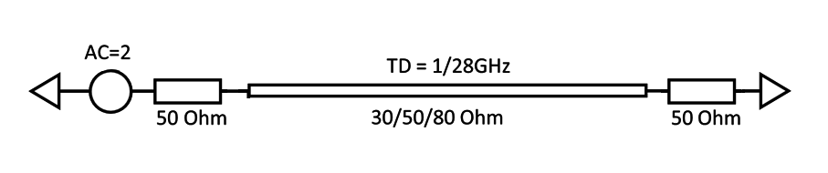
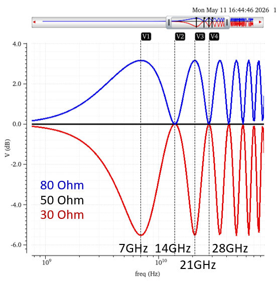
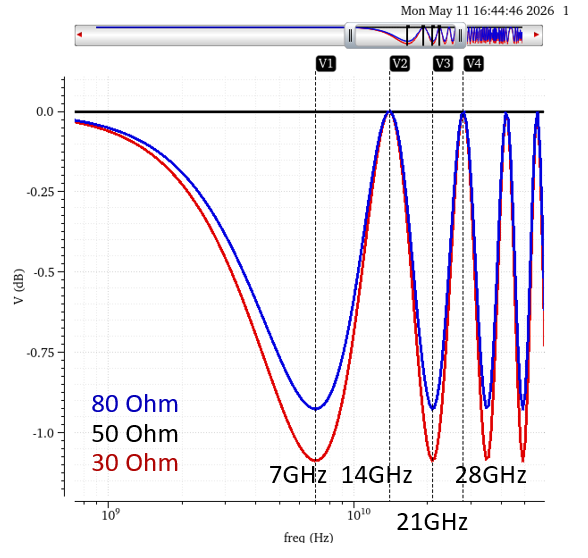
如 Fig. 9 所示，假設有一 AC Voltage Source，其輸出阻抗為 50\(\Omega\)，緊接著一條 Delay 為 1/28GHz 的傳輸線，負載端為 50\(\Omega\)。
此狀況的輸入端與輸出端響應如 Fig. 10、Fig. 11 所示，接下來討論此響應的原因。
我們先觀察傳輸線和負載端的阻抗不匹配，訊號由輸入端開始，走過 1/28GHz 的 Delay 後來到負載端，由於負載為 50\(\Omega\)， 傳輸線特徵阻抗為 50\(\Omega\) 為不反射，傳輸線特徵阻抗為 80\(\Omega\) 反射係數為負，即為相位反轉的反射， 30\(\Omega\) 的傳輸線則為相位不反轉的反射 並且再走過 1/28GHz 的 Delay 回到輸入端，一共走了 1/14GHz。
對 80\(\Omega\) 的傳輸線來說，輸入端看到反相，Delay 1/14GHz 的訊號
對 50\(\Omega\) 傳輸線而言，訊號在負載端被全吸收，故沒有訊號反射回輸入端，輸入端的頻率響與頻率無關，即水平線。
對 30\(\Omega\) 的傳輸線來說，輸入端看到同相，Delay 1/14GHz 的訊號
輸出端以 80\(\Omega\) 為例，在輸出端的反射係數為 \(\frac{50-80}{50+80}\)，即為相位反轉的反射， 反射後會經過 1/28GHz 的 Delay 回到輸入端，發生二次反射，反射係數為 \(\frac{50-80}{50+80}\)，即為相位反轉的反射， 再經過 1/28GHz 的 Delay 回到輸出端，一共走了 1/14GHz，並且相位反轉兩次。
輸出端以 30\(\Omega\) 為例，在輸出端的反射係數為 \(\frac{50-30}{50+30}\)，即為相位不反轉的反射， 反射後會經過 1/28GHz 的 Delay 回到輸入端，發生二次反射，反射係數為 \(\frac{50-30}{50+30}\)，即為相位不反轉的反射， 再經過 1/28GHz 的 Delay 回到輸出端，一共走了 1/14GHz，並且相位不反轉。
輸出端以 50\(\Omega\) 為例，在輸出端阻抗匹配，為完全吸收，故頻率響應為水平線。
值得注意的是，雖然 30\(\Omega\)、80\(\Omega\) 同為相消干涉，但因為 30\(\Omega\) 的反射係數大於 80\(\Omega\)，故 30\(\Omega\) 的 Notch Gain 更低。
Loading is 80\(\Omega\)
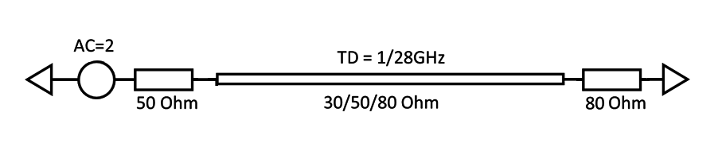
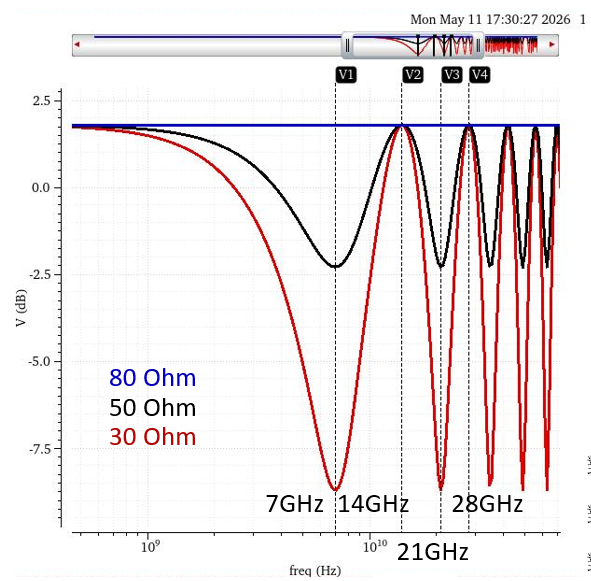
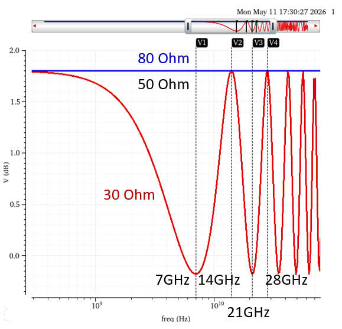
如 Fig. 12 所示，假設有一 AC Voltage Source，其輸出阻抗為 50\(\Omega\)，緊接著一條 Delay 為 1/28GHz 的傳輸線，負載端為 80\(\Omega\)。
此狀況的輸入端與輸出端響應如 Fig. 13、Fig. 14 所示，接下來討論此響應的原因。
我們先觀察傳輸線和負載端的阻抗不匹配，訊號由輸入端開始，走過 1/28GHz 的 Delay 後來到負載端，由於負載為 80\(\Omega\)， 傳輸線特徵阻抗為 80\(\Omega\) 為不反射，其餘不論是 30\(\Omega\) 或是 50\(\Omega\) 的傳輸線，反射係數為正，即為相位不反轉的反射 ，並且再走過 1/28GHz 的 Delay 回到輸入端，一共走了 1/14GHz。
對 30\(\Omega\) 或 80\(\Omega\) 的傳輸線來說，輸入端看到同相，Delay 1/14GHz 的訊號
對 80\(\Omega\) 傳輸線而言，訊號在負載端被全吸收，故沒有訊號反射回輸入端，輸入端的頻率響與頻率無關，即水平線。
注意，因為 30\(\Omega\) 的反射係數大於 50\(\Omega\)，故 30\(\Omega\) 的 Peaking 和 Notch 更嚴重
輸出端以 80\(\Omega\) 為例，在輸出端阻抗匹配，為完全吸收，故頻率響應為水平線。
輸出端以 50\(\Omega\) 為例，在輸出端的反射係數為 \(\frac{80-50}{80+50}\)，即為相位不反轉的反射， 反射後會經過 1/28GHz 的 Delay 回到輸入端，和儀器的 50\(\Omega\) 完全匹配，沒有二次反射，故輸出端的頻率響應和頻率無關，為水平線。
輸出端以 30\(\Omega\) 為例，在輸出端的反射係數為 \(\frac{80-30}{80+30}\)，即為相位不反轉的反射， ，走過 1/28GHz 的 Delay 回到輸入端，發生二次反射，反射係數為 \(\frac{50-30}{50+30}\)，為相位不反轉的反射， 並再走過 1/28GHz 的 Delay 回到輸出端，一共走了 1/14GHz，並且相位不反轉。
Loading is Short
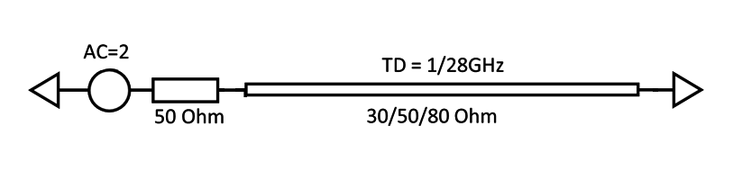
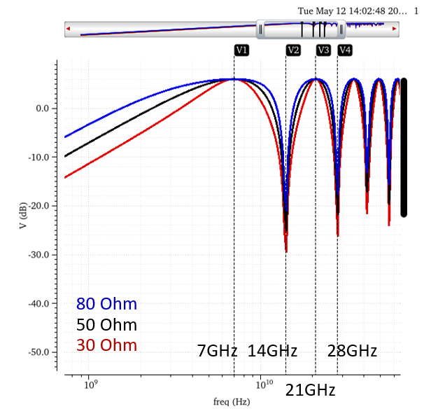
如 Fig. 14 所示，假設有一 AC Voltage Source，其輸出阻抗為 50\(\Omega\)，緊接著一條 Delay 為 1/28GHz 的傳輸線，負載端為接地。
此狀況的輸入端響應如 Fig. 15 所示，接下來討論此響應的原因。
我們先觀察傳輸線和負載端的阻抗不匹配，訊號由輸入端開始，走過 1/28GHz 的 Delay 後來到負載端，由於負載為接地， 不論特徵阻抗為何，皆為全反射，相位反轉的反射，並且再走過 1/28GHz 的 Delay 回到輸入端，一共走了 1/14GHz，相位反轉一次。
注意，在 Peaking 時因為全反射，故所有能量皆返回輸入端，此時的增益即為輸入訊號 2。